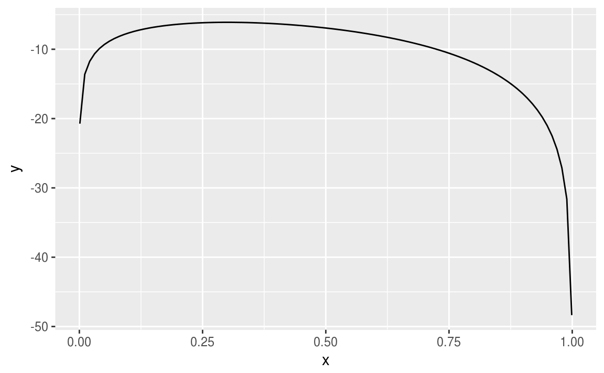
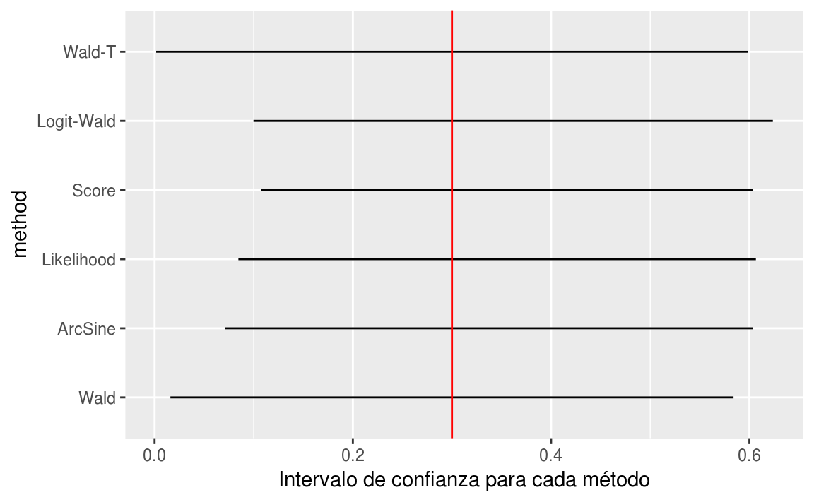
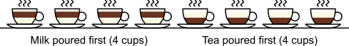

Clase 5 Análisis de datos categóricos
Sólo necesitas instalar un paquete una vez, pero debes volver a cargarlo cada vez que inicies una nueva sesión.
library(tidyverse)Las variables categóricas están por doquier. Desde ayudar a decidir cuándo un tratamiento médico es mejor hasta evaluar los factores que afectan nuestras opiniones y conductas, hoy en día los analistas encuentran innumerables usos para los métodos de datos categóricos. Primero vamos a repasar algunos conceptos de probabilidad.
5.1 Repaso y algunos conceptos
Recordemos la distribución multinomial. Supongamos que cada uno de \(n\) ensayos independientes e idénticos tiene realizaciones en \(c\) categorías. Definimos \(y_{ij}\) como \[ y_{ij} = \left\{ \begin{array}{cl} 1 & \text{si el }\; i\text{-esimo ensayo cae en la categoria }j,\\ 0 & \text{en otro caso.} \end{array}\right. \]
Entonces \(y_i=(y_{i1},y_{i2},\ldots,y_{ic})\) representa un ensayo multinomial, done \[ \displaystyle{\sum_j{y_{ij}}}=1. \]
Notemos que \(y_{ic}=1-(y_{i1}+\cdots+y_{i,c-1})\) es redundante. Sea \(n_j=\displaystyle{\sum_i{y_{ij}}}\) el número de ensayos que caen en la categoría \(j\). Los conteos \((n_1,n_2,\ldots,n_c)\) tienen una distribución multinomial.
Sea \(\pi_{j}=P(Y_{ij}=1)\), la probabilidad de éxito en la categoría \(j\). La función de masa de probabilidad de \((n_1,n_2,\ldots,n_c)\) es \[ p(n_1,n_2,\ldots,n_c) = \dfrac{n!}{n_1!n_2!\cdots n_c!}\pi_1^{n_1}\pi_2^{n_2}\cdots \pi_c^{n_c}. \]
Sea \(n=\displaystyle{\sum_j{n_j}}\). Recordemos que esta ecuación es de dimensión \(c-1\) porque \[ n_c = n - (n_1 + n_2 + \cdots + n_{c-1}). \]
Se puede ver que \[ \begin{eqnarray*} E(n_j) =n\pi_j, \quad && V(n_j)=n\pi_j(1-\pi_j),\\ C(n_i,n_j)=-n\pi_i \pi_j&\quad&\mbox{si } i\neq j \end{eqnarray*} \]
Modelo Poisson
Sean \((Y_1,Y_2,\ldots,Y_c)\) variables aleatorias Poisson independientes con parámetros \((\mu_1,\mu_2,\ldots,\mu_c)\). La función de masa de probabilidad conjunta es \[ P(Y_1=n_1, Y_2=n_2, \ldots, Y_c=n_c) = \prod_i{\mbox{exp}(-\mu_i)\dfrac{\mu_i^{n_i}}{n_i!}}. \]
El total \(n=\displaystyle{\sum_i{Y_i}}\) también tiene una distribución Poisson con media \(\displaystyle{\sum_i{\mu_i}}\). Como \(n\) también es una variable aleatoria, al condicionar en \(n\), \(\{Y_i\}\) ya no tienen una distribución Poisson, pues cada \(Y_i\) no puede exceder \(n\).
La distribución condicional es \[ \begin{eqnarray*} P\left(Y_1=n_1,\ldots,Y_c=n_c \,\middle|\, \sum_j{Y_j}=n\right) &=& \dfrac{P(Y_1=n_1,\ldots,Y_c=n_c)}{P\left(\sum_j{Y_j}\right)} \\ &=& \dfrac{\prod_i \mbox{exp}(-\mu_i)\mu_i^{n_i}/n_i!}{\mbox{exp}\left(-\sum_j{\mu_j}\right)\left(\sum_j {\mu_j}\right)^n/n!} \\ &=& \dfrac{n!}{\prod_i n_i!} \prod_i{\pi_i^{n_i}} \end{eqnarray*} \] con \(\pi_i = \dfrac{\mu_i}{\sum_i \mu_i}\), es decir, se trata de una distribución multinomial con parámetros \((n, \{\pi_i\})\).
Muchos análisis de datos categóricos suponen una distribución multinomial. Tales análisis usualmente tineen resultados similres a aquellos análisis que suponen una distribución Poisson, por las similitudes en sus funciones de verosimilitud.
En la estimación de parámetros a menudo se utilizan dos métodos para obtener intervalos de confianza:
- Método de Wald
En el caso univariado se utiliza como estimador de la varianza \(-E\left(\dfrac{d^2 L(\theta)}{d\theta^2}\right)\) y el estadístico es \[z=(\hat{\theta} - \theta_0)/\mbox{SE} \sim N(0,1)\] o en el caso multivariado, \[ W = \left(\hat{\theta}- \theta_0\right)^T\left[\mbox{Cov}\left(\hat{\theta}\right)\right]^{-1}\left(\hat{\theta}- \theta_0\right), \] y como \(\hat{\theta}\) se distribuye normal asintóticamente, entonces la distribución de \(W\) es \(\chi^2\) con grados de libertad igual al rango de \(\mbox{Cov}\left(\hat{\theta}\right)\), el número de parámetros no redundantes.
- Método de cociente de verosimilitud
Si \(l_0\) es el máximo valor de la función de verosimilitud bajo \(H_0\) y \(l_1\) es el valor máximo sobre el espacio de parámetros (que contiene también el valor bajo \(H_0\)), entonces \(l_0 \leq l_1\) y el estadístico es
\[-2\, \mbox{log}(\Lambda) = -2\, \mbox{log}(l_0/l_1)=-2(L_0-L_1) \sim \chi^2_n\] donde los grados de libertad equivalen a la diferencia de dimensiones de los espacios de parámetros.
5.1.1 Caso binomial
Definimos la función de verosimilitud de una variable aleatoria binomial con \(n\) realizaciones y \(x\) éxitos:
\[ L(\theta) = \mbox{log}(\theta^x(1-\theta)^{n-x}) = x\mbox{log}(\theta) + (n-x)\mbox{log}(1-\theta) \]
likelihood <- function(x, n){
function(theta){x*log(theta) + (n-x)*log(1-theta)}
}Creamos nuestra función de verosimilitud para \(x=3\) y \(n=10\):
mi_likelihood <- likelihood(3, 10)Graficamos la función:
ggplot(data = data.frame(x = 0), mapping = aes(x = x)) +
stat_function(fun = mi_likelihood) + xlim(0.001,0.999)
El estadístico de Wald da como resultado el invervalo
\[ \hat{\theta} \pm z_{\alpha/2}\sqrt{\dfrac{\hat{\theta}(1-\hat{\theta})}{n}} \]
El estadístico del cociente de verosimilitud es:
\[ 2x\left[x\mbox{log}\left(\dfrac{\hat{\theta}}{\theta_0}\right)+(n-x)\mbox{log}\left(\dfrac{1-\hat{\theta}}{1-\theta_0}\right)\right] = \chi^2_{1,\alpha} \]
Se puede expresar como
\[ 2\sum{\mbox{observado} \,\left[\,\mbox{log}\left(\dfrac{\mbox{observado}}{\mbox{ajustado}}\right)\right]} \]
Existen varios métodos para obtener intervalos de confianza. Utilizando la función ciAllx del paquete proportion podemos obtener intervalos de confianza para \(\hat{\theta}\) a partir de 6 métodos:
library(proportion)
intervalos <- ciAllx(x = 3, n = 10, alp = 0.05)
intervalos %>% knitr::kable()| method | x | LowerLimit | UpperLimit | LowerAbb | UpperAbb | ZWI |
|---|---|---|---|---|---|---|
| Wald | 3 | 0.016 | 0.584 | NO | NO | NO |
| ArcSine | 3 | 0.071 | 0.603 | NO | NO | NO |
| Likelihood | 3 | 0.085 | 0.607 | NO | NO | NO |
| Score | 3 | 0.108 | 0.603 | NO | NO | NO |
| Logit-Wald | 3 | 0.100 | 0.624 | NO | NO | NO |
| Wald-T | 3 | 0.002 | 0.598 | NO | NO | NO |
Los intervalos de confianza para todos los métodos son realmente muy similares. Si el tamaño de muestra \(n\) es grande, los 6 métodos dan como resultado intervalos de confianza prácticamente idénticos.
ggplot(intervalos, aes(y = method)) +
geom_segment(aes(x = LowerLimit, xend = UpperLimit, y = method, yend = method)) +
geom_vline(xintercept = 0.3, color = 'red') +
xlab('Intervalo de confianza para cada método')
Estimación de parámetros multinomiales
Definimos la función de verosimilitud \[ l(n_1,n_2,\ldots,n_c | \pi_1, \pi_2, \ldots, \pi_c) = c \prod_j \pi_j^{n_j} \] donde \(\pi_j \geq 0\) y \(\sum_j{\pi_j}=1\).
Para estimar \(\{\pi_j\}\) maximizamos la log-verosimilitud \[ L(\pi) = \sum_j{n_j \mbox{log}(\pi_j)}. \]
Para no tener redundancias vemos \(L\) como función de \(\pi_1,\pi_2,\ldots,\pi_{c-1}\) pues \(\pi_c=1-(\pi_1+ \pi_2+\cdots+\pi_{c-1})\). Por lo tanto, \[ \dfrac{d \pi_c}{d \pi_j} = -1 \qquad \mbox{para }\; j=1,2,\ldots,c-1. \] Por la regla de la cadena, \[ \dfrac{d\,\mbox{log}(\pi_c)}{d\,\pi_j}=\dfrac{1}{\pi_c} \cdot \dfrac{d\, \pi_c}{d\, \pi_j}=-\dfrac{1}{\pi_c}. \] Ahora diferenciamos \(L\) con respecto a \(\pi_j\) \[ \dfrac{d\, L(\pi)}{d\, \pi_j}=\dfrac{n_j}{\pi_j} - \dfrac{n_c}{\pi_c} = 0. \] Por lo que los estimadores de máxima verosimilitud satisfacen que \[ \dfrac{\hat{\pi}_j}{\hat{\pi}_c} = \dfrac{n_j}{n_c}. \] Ahora bien, \[ 1 = \sum_j{\pi_j}= \dfrac{\hat{\pi}_c\left(\sum_j n_j\right)}{n_c}=\dfrac{\hat{\pi}_c n}{n_c}, \] y se tiene que \(\hat{\pi_c}=n_c/n\) y \(\hat{\pi_j}=n_j/n\) para \(j=1,2,\ldots,c-1\).
Se puede verificar que estos estimadores efectivamente maximizan la verosimilitud. Notemos que \(\hat{\pi_j}=n_j/n\) son las proporciones muestrales.
5.2 La \(\chi^2\) de Pearson de una multinomial
En 1900 el estadístico Karl Pearson definió una prueba de hipótesis para la multinomial. Su motivación inicial fue analizar las probabilidades de ocurrencias de varias realizaciones en el juego de la ruleta. Consideramos para \(j=1,2,\ldots,c\) \[ H_0:\pi_j =\pi_{j0} \qquad H_1:\pi_j \neq \pi_{j0}. \]
Bajo \(H_0\), los valores esperados de \(\{n_j\}\), llamadas frecuencias esperadas son \(\mu_j=n\pi_{j0}\), \(j=1,\ldots,c\). El estadístico propueto es \[ X^2 = \sum_j{\dfrac{(n_j - \mu_j)^2}{\mu_j}} \sim \chi^2_{(c-1)}. \]
Si las diferencias \(\{n_j - \mu_j\}\) son más grandes, esto produce valores \(X^2\) más grandes para una \(n\) fija. Si \(X_o^2\) es el valor observado de \(X^2\) entonces el valor p es \(P(X^2 \geq X_o^2)\). Si \(n\) es grande, \(X^2\) tiene una distribución \(\chi^2_{c-1}\).
5.2.1 Cociente de verosimilitud de una multinomial
Bajo \(H_0\) la verosimilitud se maximiza cuando \(\hat{\pi}_j=\pi_{j0}\) y en el caso general cuando \(\hat{pi}_j=\frac{n_j}{n}\). El cociente de verosimilitud es
\[ \Lambda = \dfrac{\prod_j{\pi_{j0}^{n_j}}}{\prod_j{(n_j/n)^{n_j}}}. \] Por lo tanto, el estadístico del cociente de verosimilitud es
\[ G^2 = -2\,\mbox{log}(\Lambda) = 2\, \sum_j{n_j \mbox{log}\left(\dfrac{n_j}{n\pi_{j0}}\right)}. \]
A este estadístico se le llama estadístico \(\chi^2\) de verosimilitud. Entre más grande sea el valor de \(G^2\) hay mayor evidencia en contra de \(H_0\). En el caso general, el espacio de parámetros consiste de \(\{\pi_j\}\) sujeto a que \(\sum_j{\pi_j}=1\), por lo que la dimensión es \(c-1\). Bajo \(H_0\), se especifica por completo \(\{\pi_j\}\), por lo que la dimensión es \(0\). La diferencia entre estas dimensiones es \((c-1)\). Si \(n\) es grande, entonces \(G^2\) tiene una distribución \(\chi^2\) con \((c-1)\) grados de libertad.
5.3 Definiciones
Supongamos que se tiene una tabla de contingencias. A continuación introduciremos una notación y algunas definiciones.
5.3.1 Notación
Sea \(\pi_{ij}\) la probabilidad de que una observación \((X,Y)\) esté en la celdilla (\(i\),\(j\)). Las densidades marginales las denotamos por: \[ \pi_{i+}=\sum_j{\pi_{ij}},\qquad \pi_{+j} = \sum_i{\pi_{ij}} \] Cuando ambas variables son aleatorias, se pueden definir las densidades marginales: \[ \pi_{j|i} = \pi_{ij}/\pi_{i+}, \qquad \mbox{para toda }i\mbox{ y }j \]
Se dice que las variables son independientes si \[ \pi_{ij} = \pi_{i+}\pi_{+j} \quad \mbox{para }\; i=1,\ldots,I\; \mbox{ y para }\; j=1,\ldots,J. \] Cuando son independientes se cumple que \[ \pi_{j|i}=\pi_{ij}/\pi_{i+}=(\pi_{i+}\pi_{+j})/\pi_{i+}=\pi_{+j} \quad \mbox{para }i=1,\ldots,I. \]
5.3.2 Razón de momios
Ejemplo
Un sitio de apuestas escribe:
Momio 7/1: Ganas $7 por cada $1 apostado. Si apuestas $10, cobras $70 más tu apuesta, es decir, $80.
Momio 5/2: Ganas $5 por cada $2 apostados. Si apuestas $10, cobras $25 más tu apuesta, es decir, $35.
Momio 3/5: Ganas $3 por cada $5 apostados. Si apuestas $10, cobras $6 más tu apuesta, es decir, $16.

Si el momio es menor que 1 entonces…
La probabilidad de éxito es cero.
La probabilidad de éxito es menor que \(1/2\).
El éxito es más probable que el fracaso.
Todas la anteriores.
Inversamente,
\[ \pi = \dfrac{\Omega}{\Omega + 1}. \]
Pensemos nuevamente en una tabla de contingencias de \(2\times 2\), en la \(i\)-ésima fila los momios de éxito en vez de fracaso son \(\Omega_i=\pi_i/(1-\pi_i)\). La razón de momios de \(\Omega_1\) y \(\Omega_2\) en ambas filas es:
\[ \theta = \dfrac{\Omega_1}{\Omega_2}=\dfrac{\pi_1/(1-\pi_1)}{\pi_2/(1-\pi_2)} \]
Si se tiene una tabla con probabilidades conjuntas \(\{\pi_{ij}\}\) la definición equivalente de momio para cada fila es \(\Omega_i=\pi_{i1}/\pi_{i2}\), \(i=1,2\). Entonces la razón de momios es:
\[ \theta = \dfrac{\pi_{11}/\pi_{12}}{\pi_{21}/\pi_{22}}=\dfrac{\pi_{11}\pi_{22}}{\pi_{12}\pi_{21}} \]
A \(\theta\) se le conoce también como la razón del producto cruzado.
¿Cómo interpretamos este número?
Si \(\theta=1\) (o \(\Omega_1=\Omega_2\)), entonces las variables son independientes.
Si \(\theta > 1\), entonces las observaciones en el renglón 1 tienen más probabilidad de éxito que observaciones en en renglón 2, es decir, \(\pi_1 > \pi_2\).
- Si \(\theta < 1\), entonces \(\pi_1 < \pi_2\).
Para conteos en una tabla de contingencia, la razón de momios muestral es:
\[ \hat{\theta} = \dfrac{n_{11}n_{22}}{n_{12}n_{21}} \]
Regresemos a los datos de billboard:
billboard <- read_csv("datos/billboard_alltime.csv")OR <- function(var1, var2){
n <- table(var1, var2)
(n[1,1] / n[1,2])*(n[2,2] / n[2,1])
}
OR(billboard$gains_performance, billboard$rising)
#> [1] 2.75Los chances de éxito (subir una o más posiciones en el chart) cuando no hubo una presentación en vivo (rengón 1) son equivalentes a 2.75 veces los chances de éxito (incremento en el chart) que cuando no hubo presentación en vivo (renglón 2).
Con la función odds.ratio del paquete questionr se puede calcular la razón de momios y el paquete hace una prueba de hipótesis conocida como prueba exacta de Fisher:
library(questionr)
odds.ratio(table(billboard$gains_performance, billboard$rising))
#> OR 2.5 % 97.5 % p
#> Fisher's test 2.75 2.70 2.8 <2e-16 ***
#> ---
#> Signif. codes: 0 '***' 0.001 '**' 0.01 '*' 0.05 '.' 0.1 ' ' 1Valores de \(\theta\) más alejados de \(1\) reflejan un mayor grado de asociación entre las variables.
Dos valores representan la misma asociación pero en direcciones opuestas, cuando uno es el recíproco del otro.
- Por ejemplo, cuando \(\theta=0.25\) los chances de éxito en el renglón 1 son 0.25 veces los chances en el renglón 2, o equivalentemente, los chances de éxito en el renglón 2 son 1/0.25 = 4 veces los chances en el renglón 1.
Si se invierte el orden de los renglones o de las columnas, entonces \(\theta\)
no cambia.
debe ser necesariamente \(1\).
es el recíproco de su valor original.
puede tomar cualquier valor.
Para hacer inferencia es conveniente usar \(\mbox{log}(\theta)\). Este tiene las siguientes propiedades:
El caso de independencia corresponde a \(\mbox{log}(\theta) = 0\).
El logaritmo de la razón de momios es simétrico alrededor de \(0\).
Si se invierten los renglones o las columnas, entonces \(\mbox{log}(\theta)\) cambia de signo pero tiene la misma magnitud. Por ejemplo, dos valores de \(\mbox{log}(\theta)\) que tienen misma magnitud pero signos contrarios, como \(\mbox{log}(4)=1.39\) y \(\mbox{log}(0.25)=-1.39\), representan el mismo grado de asociación.
5.4 Asociación en tablas de tamaño \(I\times J\)
En tablas de \(2\times 2\) un sólo número como la razón de momios puede ser suficiente para resumir la asociación. En tablas \(I\times J\) usualmente no es posible resumir la asociación entre las dos variables con un sólo número sin alguna pérdida de información. Sin embargo, un conjunto de razones de momios, o bien, algun otro estadístico de resumen pueden ser útil para describir la asociación entre las variables.
5.4.1 Razones de momios en tablas \(I\times J\)
Se puede utiliar los \(\dbinom{I}{2}\) pares de renglones en combinación con los \(\dbinom{J}{2}\) pares de columnas. Para renglones \(a\) y \(b\) y columnas \(c\) y \(d\) la razón de momios utiliza 4 valores en casillas en un patrón rectangular:
\[ \dfrac{\pi_{ab}\pi_{bd}}{\pi_{bc}\pi_{ad}} \]
Consideremos el subconjunto de \((I-1)(J-1)\) razones de momios locales:
\[ \theta_{ij} = \dfrac{\pi_{ij}\pi_{i+1,j+1}}{\pi_{i,j+1}\pi_{i+1,j}}, \qquad i=1,\ldots, I-1,\;\;\; j=1,\ldots,J-1. \]
Estos \((I-1)(J-1)\) razones de momios determinan las razones de momios entre pares de renglones y pares de columnas.
5.4.2 Ejemplo: mushrooms
Este conjunto de datos incluye descripciones de muestras correspondientes a 23 especies de setas de las familias Agaricus y Lepiota.
Cada especie está identificada como definitivamente comestible, definitivamente venenosa, o de comestibilidad desconocida y no recomendada su ingesta.
Las otras variables se presentan en la siguiente tabla:
| Variable | Categorías |
|---|---|
| cap-shape | bell=b,conical=c,convex=x,flat=f,knobbed=k,sunken=s |
| cap-surface | fibrous=f,grooves=g,scaly=y,smooth=s |
| cap-color | brown=n,buff=b,cinnamon=c,gray=g,green=r,pink=p,purple=u,red=e,white=w,yellow=y |
| bruises | bruises=t,no=f |
| odor | almond=a,anise=l,creosote=c,fishy=y,foul=f,musty=m,none=n,pungent=p,spicy=s |
| gill-attachment | attached=a,descending=d,free=f,notched=n |
| gill-spacing | close=c,crowded=w,distant=d |
| gill-size | broad=b,narrow=n |
| gill-color | black=k,brown=n,buff=b,chocolate=h,gray=g,green=r,orange=o,pink=p,purple=u,red=e,white=w,yellow=y |
| stalk-shape | enlarging=e,tapering=t |
| stalk-root | bulbous=b,club=c,cup=u,equal=e,rhizomorphs=z,rooted=r,missing=? |
| stalk-surface-above-ring | fibrous=f,scaly=y,silky=k,smooth=s |
| stalk-surface-below-ring | fibrous=f,scaly=y,silky=k,smooth=s |
| stalk-color-above-ring | brown=n,buff=b,cinnamon=c,gray=g,orange=o,pink=p,red=e,white=w,yellow=y |
| stalk-color-below-ring | brown=n,buff=b,cinnamon=c,gray=g,orange=o,pink=p,red=e,white=w,yellow=y |
| veil-type | partial=p,universal=u |
| veil-color | brown=n,orange=o,white=w,yellow=y |
| ring-number | none=n,one=o,two=t |
| ring-type | cobwebby=c,evanescent=e,flaring=f,large=l,none=n,pendant=p,sheathing=s,zone=z |
| spore-print-color | black=k,brown=n,buff=b,chocolate=h,green=r,orange=o,purple=u,white=w,yellow=y |
| population | abundant=a,clustered=c,numerous=n,scattered=s,several=v,solitary=y |
| habitat | grasses=g,leaves=l,meadows=m,paths=p,urban=u,waste=w,woods=d |
mushrooms <- read_csv("datos/mushrooms.csv")
glimpse(mushrooms)
#> Observations: 8,124
#> Variables: 23
#> $ edibility <chr> "p", "e", "e", "p", "e", "e", "e", ...
#> $ `cap-shape` <chr> "x", "x", "b", "x", "x", "x", "b", ...
#> $ `cap-surface` <chr> "s", "s", "s", "y", "s", "y", "s", ...
#> $ `cap-color` <chr> "n", "y", "w", "w", "g", "y", "w", ...
#> $ bruises <chr> "t", "t", "t", "t", "f", "t", "t", ...
#> $ odor <chr> "p", "a", "l", "p", "n", "a", "a", ...
#> $ `gill-attachment` <chr> "f", "f", "f", "f", "f", "f", "f", ...
#> $ `gill-spacing` <chr> "c", "c", "c", "c", "w", "c", "c", ...
#> $ `gill-size` <chr> "n", "b", "b", "n", "b", "b", "b", ...
#> $ `gill-color` <chr> "k", "k", "n", "n", "k", "n", "g", ...
#> $ `stalk-shape` <chr> "e", "e", "e", "e", "t", "e", "e", ...
#> $ `stalk-root` <chr> "e", "c", "c", "e", "e", "c", "c", ...
#> $ `stalk-surface-above-ring` <chr> "s", "s", "s", "s", "s", "s", "s", ...
#> $ `stalk-surface-below-ring` <chr> "s", "s", "s", "s", "s", "s", "s", ...
#> $ `stalk-color-above-ring` <chr> "w", "w", "w", "w", "w", "w", "w", ...
#> $ `stalk-color-below-ring` <chr> "w", "w", "w", "w", "w", "w", "w", ...
#> $ `veil-type` <chr> "p", "p", "p", "p", "p", "p", "p", ...
#> $ `veil-color` <chr> "w", "w", "w", "w", "w", "w", "w", ...
#> $ `ring-number` <chr> "o", "o", "o", "o", "o", "o", "o", ...
#> $ `ring-type` <chr> "p", "p", "p", "p", "e", "p", "p", ...
#> $ `spore-print-color` <chr> "k", "n", "n", "k", "n", "k", "k", ...
#> $ population <chr> "s", "n", "n", "s", "a", "n", "n", ...
#> $ habitat <chr> "u", "g", "m", "u", "g", "g", "m", ...library(oddsratio)
mushrooms_1 <- mushrooms %>%
mutate(edibility = 1*(edibility == 'e'))
fit_glm <- glm(edibility ~ `cap-color`, data=mushrooms_1, family='binomial')
or_mushrooms <- or_glm(data = mushrooms_1, model = fit_glm)or_mushrooms %>% knitr::kable()| predictor | oddsratio | CI_low (2.5 %) | CI_high (97.5 %) | increment |
|---|---|---|---|---|
cap-colorc |
6.67e+00 | 3.247 | 14.50 | Indicator variable |
cap-colore |
1.78e+00 | 1.263 | 2.55 | Indicator variable |
cap-colorg |
3.19e+00 | 2.272 | 4.56 | Indicator variable |
cap-colorn |
3.10e+00 | 2.210 | 4.41 | Indicator variable |
cap-colorp |
1.59e+00 | 0.992 | 2.56 | Indicator variable |
cap-colorr |
5.30e+06 | 4.411 | NA | Indicator variable |
cap-coloru |
5.30e+06 | 4.411 | NA | Indicator variable |
cap-colorw |
5.62e+00 | 3.951 | 8.12 | Indicator variable |
cap-colory |
1.49e+00 | 1.048 | 2.14 | Indicator variable |
En esta tabla se tienen dos columnas donde “e” siginifica que la seta es comestible y “p” que la seta es venenosa. En los renglones están los colores de las setas codificados de acuerdo con la tabla anterior. En las columnas están las razones de momio para cada color para aquellas setas que son comestibles.
Veamos la tabla de color y comestibilidad:
table(mushrooms$edibility, mushrooms$`cap-color`)
#>
#> b c e g n p r u w y
#> e 48 32 624 1032 1264 56 16 16 720 400
#> p 120 12 876 808 1020 88 0 0 320 672Podemos ver que la razón de momios para p=pink y u=purple es “infinita” porque hay muy pocas observaciones para setas de esos colores. De cualquier forma, con los momios podemos concluir que aquellas setas de colores c=cinnamon y w=white aumentan los chances de que sean comestibles en 6.7 y 5.6, respectivamente.
5.5 Intervalos de confianza para los parámetros de asociación
La precisión de los esitmadores de asociación está caracterizada por las distribuciones muestrales de los errores estándar. Para tablas de \(2\times 2\) recordemos que \[ \hat{\theta} = \dfrac{n_{11}n_{22}}{n_{12}n_{21}} \]
Se puede demostrar que \(\hat{\theta}\) tiene una distribución normal asinotóticamente alrededor de \(\theta\). A menos que \(n\) sea grande, la distribución muestral generalmente es sesgada.
5.5.1 Error estándar de la razón de momios
Utilizando la transformación de logaritmo, la estructura multiplicativa converge muy rápidamente a la normalidad. Una aproximación del error estándar para \(\mbox{log}(\hat{\theta})\) es
\[ \hat{\sigma}(\mbox{log}\hat{\theta}) = \sqrt{\dfrac{1}{n_{11}}+\dfrac{1}{n_{12}}+\dfrac{1}{n_{21}}+\dfrac{1}{n_{22}}}. \]
Como consecuencia de la normalidad de la distribución de \(\mbox{log}(\hat{\theta})\),
\[ \mbox{log}(\hat{\theta}) \pm z_{\alpha/2}\hat{\sigma}(\mbox{log}\hat{\theta}) \]
5.6 Prueba de independencia
Suponemos que se tiene resultados obtenidos de una distribución multinomial y probabilidades conjuntas \(\{\pi_{ij}\}\) en una tabla de contingencia de dimensiones \(I\times J\).
5.6.1 La prueba \(\chi^2\) de Pearson
Ya estudiamos la prueba para valores específicos de probabilidades multinomiales. Una prueba de \(H_0:\mbox{independencia}\) utiliza la \(\chi^2\) con \(n_{ij}\) en lugar de \(n_i\) y con \(\mu_{ij}=n\pi_{i+}\pi_{+j}\) en lugar de \(\mu_i\).
Bajo \(H_0\):
\[E(n_{ij}) = \mu_{ij}\]
Usualmente \(\{\pi_{i+}\}\) y \(\{\pi_{+j}\}\) son conocidas. Sus estimadores de máxima verosimilitud son \(\hat{\pi}_{i+}=n_{i+}/n\) y \(\hat{\pi}_{+j}=n_{+j}/n\).
Las frecuencias esperadas estimadas son \[ \{\hat{\mu}_{ij} = n\hat{\pi}_{i+}\hat{\pi}_{+j}=n_{i+}n_{+j}/n^2\} \]
Por lo tanto, el estadístico de Pearson es: \[ X^2 = \displaystyle{\sum_{i}\sum_{j}{\dfrac{(n_{ij}-\hat{\mu}_{ij})^2}{\hat{\mu}_{ij}}}}. \]En 1900, el mismo Karl Pearson argumento que reemplazar las \(\{\mu_{ij}\}\) por sus estimadores \(\{\hat{\mu}_{ij}\}\) no afectaría la distribución muestral cuando se tiene una muestra grande. Como la tabla de contingencia tiene \(IJ\) categorías, Pearson argumentó que la \(X^2\) se distribuye como chi cuadrada asintóticamente con grados de libertad \(IJ-1\).
Sin embargo, años después (en 1922) Fisher publicó un artículo corrigiendo el error de Pearson. Lo que sucede es lo siguiente: estimar \(\{\hat{\mu}_{ij}\}\) requiere de estimar \(\{\pi_{i+}\}\) y \(\{\pi_{+j}\}\), por lo que los grados de libertad son:
\[ (IJ - 1) - (I-1) - (J-1) = (I-1)(J-1). \]El estadístico de cociente de verosimilitud
Para una muestra multinomial, el kernel de la verosimilitud es
\[ \prod_i \prod_j{\pi_{ij}^{n_{ij}}},\qquad \;\text{donde todas }\;\; \pi_{ij}\geq0\;\; \mbox{y}\;\;\sum_i \sum_j{\pi_{ij}}=1. \]
Bajo \(H_0:\text{independencia}\), \(\hat{\pi}_{ij}=\hat{\pi}_{i+}\hat{\pi}_{+j}=n_{i+}n_{+j}/n^2\). En el caso general, \(\hat{\pi}_{ij}=n_{ij}/n\). El cociente de verosimilitud es igual a
\[ \Lambda = \dfrac{\prod_i \prod_j (n_{i+}n_{+j})^{n_{ij}}}{n^n\prod_i\prod_j{n_{ij}^{n_{ij}}}}. \]
El estadístico del cociente de verosimilitud es \(-2\mbox{log}(\Lambda)\). Denotado por \(G^2\), es igual a:
\[ G^2 = -2\mbox{log}(\Lambda) = 2\sum_i\sum_j{n_{ij}\mbox{log}(n_{ij}/\hat{\mu}_{ij})} \]
Entre más grandes sean los valores de \(G^2\) y \(X^2\), mayor evidencia de independencia. En el caso general el espacio consiste de \(\{\pi_{ij}\}\) sujeto a la restricción lineal de que deben sumar \(1\). El espacio de parámetros tiene dimensión \(IJ-1\). Bajo \(H_0\) el espacio está determinado por \(\{\pi_{i+}\}\) y \(\{\pi_{+j}\}\), por lo que su dimensión es de \((I-1) + (J-1)\). La diferencia entre estas dimensiones es \((I-1)(J-1)\). Para muestras grandes, \(G^2\) tiene una distribución nula \(\chi^2\) con grados de libertad \((I-1)(J-1)\). Por lo que \(G^2\) y \(X^2\) tienen la misma distribución límite. De hecho, son asintóticamente equivalentes: \(X^2 - G^2\) converge en probabilidad a \(0\).
5.6.2 Ejemplo: brecha de género
gendergap <- matrix(c(279,73,225,165,47,191), byrow = T, ncol = 3)
dimnames(gendergap) <- list(Gender=c("Female","Male"), PartyID=c("Democrat","Independent","Republican"))
gendergap %>% knitr::kable()| Democrat | Independent | Republican | |
|---|---|---|---|
| Female | 279 | 73 | 225 |
| Male | 165 | 47 | 191 |
La prueba de \(\chi^2\) de Pearson se puede realizar con la función chisq.test que ya está en R base:
chisq.test(gendergap)
#>
#> Pearson's Chi-squared test
#>
#> data: gendergap
#> X-squared = 7, df = 2, p-value = 0.035.8 La catadora de té
Una tarde del verano de 1920 en Cambridge, Inglaterra, Ronald Fisher tomaba el té en la terraza con sus colegas y amigos.
La reunión había progresado complacientemente y en una ocasión cuando las tazas de té las volvían a llenar, Lady Muriel Bristol abruptadmente le dijo al mesero que parara de rellenar su taza.
Lady Bristol indicó con desdeño que el mesero había puesto en la taza primero la leche y luego el té, en lugar de cumplir con una preferencia ampliamente conocida de té primero y luego leche.
Miradas de reojo fueron intercambiadas por numerosos miembros del grupo, preguntándose qué diferencia podría haber con que se añadiera a la taza primero la leche o primero el té. Hacía toda la diferencia, según Lady Bristol, afirmando que fácilmente ella podía decir si se había vertido primero en la taza la leche o el té.
Muy a salvo de la vista de Lady Bristol, se prepararon 8 tazas de té, en las cuales en 4 se virtió primero la leche y luego el té, y en las 4 restantes se virtió primero la leche y luego el té, siempre en las mismas proporciones.

Muy amablemente, Lady Bristol cató las 8 tazas de té y dio su veredicto sobre cuáles de las 4 tazas eran aquellas en las q se sirvió primero la leche y luego el té. Los resultados obtenidos a partir de esta cata de té se muestran en la siguiente tabla:
Poured <- c("Milk","Milk","Tea","Tea")
Guess <- c("Milk","Tea","Milk","Tea")
count <- c(3,1,1,3)
teadata <- tibble(Poured, Guess, count)
tea <- xtabs(count ~Poured + Guess, data = teadata)
tea %>% knitr::kable()| Milk | Tea | |
|---|---|---|
| Milk | 3 | 1 |
| Tea | 1 | 3 |
Utilizando el método de la \(\chi^2\) de Pearson hacemos la prueba de independencia \(H_0:\theta=1\):
chisq.test(tea, correct = FALSE)
#> Warning in chisq.test(tea, correct = FALSE): Chi-squared approximation may
#> be incorrect
#>
#> Pearson's Chi-squared test
#>
#> data: tea
#> X-squared = 2, df = 1, p-value = 0.2Obtenemos el mensaje de que la prueba podría ser incorrecta. Esto no nos sorprende ya que la prueba no tiene mucha potencia debido al poco número de observaciones. ¡Fisher no le daría a probar 30 tazas a Lady Bristol sin convertirse en el objeto de su desdeño!
El método de R implementa la prueba de \(\chi^2\) utilizando la corrección de Yates cuando el tamaño de muestra es pequeño:
\[ X^2_Y = \sum_{i}\sum_j{\dfrac{(|n_{ij}-\hat{\mu}_{ij}|-\frac{1}{2})^2}{\hat{\mu}_{ij}}}\sim\chi^2_{(I-1)(J-1)} \]
En el libro The Lady Tasting Tea: How Statistics Revolutionized Science in the Twentieth Century escrito por David Salsburg, se describe con detalle este suceso y los experimentos diseñados por Ronald Fisher para probar las afirmaciones de Lady Bristol.
5.9 Modelos multinomiales para conteos
Condicional a la suma \(n\) de conteos de casillas en tablas de contingencia, los modelos log-lineales Poisson para \(\{\mu_{ij}\}\) se convierten en modelos multinomiales para las probabilidades de las casillas \[ \left\{\pi_{ij} = \mu_{ij}/\sum_a\sum_b{\mu_{ab}}\right\} \]
Por ejemplo, para el modelo saturado:
\[ \pi_{ij} = \dfrac{\mbox{exp}(\lambda + \lambda_i^X + \lambda_j^Y + \lambda_{ij}^{XY})}{\sum_a\sum_b{\mbox{exp}(\lambda+\lambda_a^X+\lambda_b^Y+\lambda_{ab}^{XY})}}. \]
El parámetro de intercepto \(\lambda\) se cancela en este modelo multinomial. Este parámetro está relacionado con el tamaño total de la muestra, que es aleatorio en el modelo Poisson, pero no lo es en el modelo multinomial. Por esta razón, el modelo multinomial saturado tiene \(IJ-1\) parámetros, que representa la restricción usual de las probabilidades, o sea, \(\sum_i\sum_j{\pi_{ij}}=1\).
Por esta razón ajustar un modelo lineal Poisson con función liga \(\eta = log(\mu)\). Veremos esto con más detalle en las siguientes clases. Recordemos el ejemplo de las admisiones de posgrado de Berkeley.
library(MASS)
UCBAdmissions %>% as.data.frame() %>% knitr::kable()| Admit | Gender | Dept | Freq |
|---|---|---|---|
| Admitted | Male | A | 512 |
| Rejected | Male | A | 313 |
| Admitted | Female | A | 89 |
| Rejected | Female | A | 19 |
| Admitted | Male | B | 353 |
| Rejected | Male | B | 207 |
| Admitted | Female | B | 17 |
| Rejected | Female | B | 8 |
| Admitted | Male | C | 120 |
| Rejected | Male | C | 205 |
| Admitted | Female | C | 202 |
| Rejected | Female | C | 391 |
| Admitted | Male | D | 138 |
| Rejected | Male | D | 279 |
| Admitted | Female | D | 131 |
| Rejected | Female | D | 244 |
| Admitted | Male | E | 53 |
| Rejected | Male | E | 138 |
| Admitted | Female | E | 94 |
| Rejected | Female | E | 299 |
| Admitted | Male | F | 22 |
| Rejected | Male | F | 351 |
| Admitted | Female | F | 24 |
| Rejected | Female | F | 317 |
Ajustamos los parámetros para el modelo
llmFit <- loglm(~ Admit + Gender + Dept, data = UCBAdmissions)
coef(llmFit)
#> $`(Intercept)`
#> [1] 5.18
#>
#> $Admit
#> Admitted Rejected
#> -0.228 0.228
#>
#> $Gender
#> Male Female
#> 0.191 -0.191
#>
#> $Dept
#> A B C D E F
#> 0.2305 -0.2363 0.2143 0.0666 -0.2380 -0.0370Comparamos utilizando el modelo Poisson:
UCBdf <- as.data.frame(UCBAdmissions)
glmFit <- glm(Freq ~ Admit + Gender + Dept, family=poisson(link = "log"),
contrasts=list(Admit=contr.sum, Gender=contr.sum, Dept=contr.sum),
data=UCBdf)
coef(glmFit)
#> (Intercept) Admit1 Gender1 Dept1 Dept2 Dept3
#> 5.1776 -0.2284 0.1914 0.2305 -0.2363 0.2143
#> Dept4 Dept5
#> 0.0666 -0.23805.10 Modelos log lineales con tres variables categóricas
En la primera clase vimos ejemplos de modelos log lineales con tres variables categóricas. Sabemos construir las tablas de contingencia de tres variables con la función xtabs() y ajustar los modelos con las funciones loglin(), loglm(), y glm(). Vimos que se podía ajustar modelos de independencia y en general, de diferentes tipos de asociaciones.
Una tabla de contingencia de \(I\times J \times K\) con variables de respuesta \(X, Y\) y \(Z\) potencialmente tiene varios tipos de independencias.
Los modelos se aplican a la distribución multinomial con probabilidades de celdillas \(\{\pi_{ijk}\}\) en las cuales \(\sum_i\sum_j\sum_k\pi_{ijk}=1\) y también a muestreo con Poisson con medias \(\mu_{ijk}\).
5.10.1 Tipos de independencia
Independencia mutua
Las tres variables son mutuamente independientes cuando \[ \pi_{ijk}=\pi_{i++}\pi_{+j+}\pi_{++k}\qquad\;\text{para toda}\;i,j,\,\mbox{ y }\, k. \]
Para frecuencias esperadas \(\mu_{ijk}\), la independencia mutua tiene un modelo loglineal de la forma
\[ \mbox{log}\,\mu_{ijk} = \lambda+\lambda_{i}^X+\lambda_j^Y+\lambda_k^Z. \]
Independencia conjunta
La variable \(Y\) es conjuntamente independiente de \(X\) y \(Z\) cuando
\[ \pi_{ijk}=\pi_{i+k}\pi_{+j+}\qquad\;\text{para toda}\;i,j,\,\mbox{ y }\, k. \]
Esto es equivalente a tener independencia entre la variable \(Y\) y una variable con las \(IK\) combinaciones de los niveles de \(X\) y \(Z\). El modelo loglineal es:
\[ \mbox{log}\,\mu_{ijk} = \lambda+\lambda_{i}^X+\lambda_j^Y+\lambda_k^Z + \lambda_{ik}^{XZ}. \]
Similarmente, \(X\) podría ser conjuntamente independiente de \(Y\) y \(Z\), o bien, \(Z\) podría ser conjuntamente independiente de \(X\) y \(Y\). La independencia mutua implica independencia conjunta de cualquier variable con las otras dos.
Independencia condicional
Las variables categóricas \(X\) y \(Y\) son condicionalmente independientes dado \(Z\) cuando se cumple la independencia para cada tabla parcial cuando cada \(Z\) permanece fija. Esto es, si \(\pi_{ij|k}=P(X=i,Y=j|Z=k)\), entonces
\[ \pi_{ij|k}=\pi_{i+|k}\pi_{+j|k}\qquad\;\text{para toda}\;i,j,\,\mbox{ y }\, k. \]
Para probabilidades conjuntas en toda la tabla esto es equivalente:
\[ \pi_{ijk}=\pi_{i+k}\pi_{+jk}/\pi_{++k}\qquad\;\text{para toda}\;i,j,\,\mbox{ y }\, k. \]
La independencia condicional de \(X\) y \(Y\), dado \(Z\), tiene un modelo loglineal de la forma
\[ \mbox{log}\,\mu_{ijk} = \lambda+\lambda_i^X+\lambda_j^Y + \lambda_k^Z+ \lambda_{ik}^{XZ} + \lambda_{jk}^{YZ}. \]
Esta es una condición más débil de independencia conjunta. La independencia mutua implica que \(Y\) es conjuntamente independiente de \(X\) y \(Z\), la cual implica que \(X\) y \(Y\) son condicionalmente independientes.
En la siguiente tabla resumimos los tres tipos de independencia:
| Modelo | Forma probabilística para \(\pi_{ijk}\) | Términos de asociación en el modelo loglineal | Interpretación |
|---|---|---|---|
| 1 | \(\pi_{i++}\pi_{+j+}\pi_{++k}\) | Ninguno | Independencia mutua de \(X,Y,Z\) |
| 2 | \(\pi_{i+k}\pi_{+j+}\) | \(\lambda_{ik}^{XZ}\) | Independencia conjunta de \(Y\) con \(X,Z\) |
| 3 | \(\pi_{i+k}\pi_{+jk}/\pi_{++k}\) | \(\lambda_{ik}^{XZ}+\lambda_{jk}^{YZ}\) | Independencia condicional de \(X\) y \(Y\) dado \(Z\) |
5.10.2 Asociación homogénea e interacciones de 3 factores
Los modelos (1), (2), y (3) tienen tres, dos, y un par de variables condicionalmente independientes, respectivamente. En los modelos (2) y (3) los parámetros con doble subíndice (tales como \(\lambda_{ij}^{XY}\)) representan dependencias condicionales entre las variables.
Un modelo con las tres dependencias condicionales es
\[ \mbox{log}\,\mu_{ijk} = \lambda + \lambda_i^X + \lambda_j^Y + \lambda_k^Z + \lambda_{ij}^{XY} + \lambda_{ik}^{XZ} + \lambda_{jk}^{YZ}. \]
Si exponenciamos ambas partes de la ecuación, las probabilidades en cada casilla tienen la forma
\[ \pi_{ijk} = \psi_{ij}\phi_{jk}\omega_{ik}. \]
No existe una expresión cerrada para los tres factores en términos de los márgenes de las \(\{\pi_{ijk}\}\) en el caso general. Se puede demostrar que las razones de momios entre caulesquiera dos pares de variables son idénticos en cada categoría de la tercera variable. A este modelo se le llama el modelo loglineal de asociación homogénea, o bien, el modelo de no interacción entre los 3 factores.
El modelo loglineal general es
\[ \mbox{log}\, \mu_{ijk} = \lambda + \lambda_i^X + \lambda_j^Y + \lambda_k^Z + \lambda_{ij}^{XY} + \lambda_{jk}^{YZ} + \lambda_{jk}^{YZ} + \lambda_{ijk}^{XYZ} \]
Con variables indicadoras, \(\lambda_{ijk}^{XYZ}\) es el coeficiente del producto de la \(i\)-ésima variable indicadora de \(X\), la \(j\)-ésima de \(Y\), y la \(k\)-ésima de \(Z\). El número total de parámetros no redundates es
\[\begin{eqnarray*} 1 &+& (I-1) + (J-1) + (K-1) + (I-1)(J-1) + (I-1)(K-1) \\ &+& (J-1)(I-1) + (I-1)(J-1)(K-1) = IJK, \end{eqnarray*}\]que es el número total de conteos de casillas. Este modelo tiene tantos parámetros como observaciones y es saturado. Describe todas las posibles \(\{\mu_{ijk}\}\). Cada par de variables pueden ser condicionalmente dependientes, y las razones de momios para cada par pueden variar a lo largo de todas las categorías de la tercera variable.
Poniendo algunos términos como cero obtenemos cualquiera de los modelos anteriores. En la siguiente tabla resumimos los modelos. Para facilitar cuando nos referimos a ellos en la tabla le asignamos un símbolo que pone en la lista únicamente el (los) términos de mayor orden para cada variable. Por ejemplo, el modelo (3) de independencia condicional se codifica como (XZ, YZ), porque sus términos de mayor orden son \(\lambda_{ik}^{XZ}\) y \(\lambda_{jk}^{YZ}\).
| Fórmula del modelo loglineal | Símbolo |
|---|---|
| \(\mbox{log}\, \mu_{ijk} = \lambda + \lambda_i^X + \lambda_j^Y,+,\lambda_k^Z\) | (X,Y,Z) |
| \(\mbox{log}\, \mu_{ijk} = \lambda + \lambda_i^X + \lambda_j^Y,+,\lambda_k^Z + \lambda_{ij}^{XY}\) | (XY,Z) |
| \(\mbox{log}\, \mu_{ijk} = \lambda + \lambda_i^X + \lambda_j^Y,+,\lambda_k^Z + \lambda_{ij}^{XY} + \lambda_{jk}^{YZ}\) | (XY,YZ) |
| \(\mbox{log}\, \mu_{ijk} = \lambda + \lambda_i^X + \lambda_j^Y +,\lambda_k^Z + \lambda_{ij}^{XY} + \lambda_{jk}^{YZ} + \lambda_{jk}^{YZ}\) | (XY,YZ,XZ) |
| \(\mbox{log}\, \mu_{ijk} = \lambda + \lambda_i^X + \lambda_j^Y + \lambda_k^Z + \lambda_{ij}^{XY} + \lambda_{jk}^{YZ} + \lambda_{jk}^{YZ} + \lambda_{ijk}^{XYZ}\) | (XYZ) |
Finalmente, en la siguiente tabla resumímos el número de grados de libertad de los estadísticos \(G^2\) y \(X^2\) que tienen una distribución muestral aproximada a \(\chi^2\). El número de grados de libertad es igual a la diferencia entre el número de parámetros en el caso general y cuando el modelo se cumple. En el caso general hay \(IJK-1\) parámetros.
| Modelo | Grados de libertad |
|---|---|
| \((X,Y,Z)\) | \(IJK - I - J - K + 2\) |
| \((XY,Z)\) | \((K-1)(IJ-1)\) |
| \((XZ,Y)\) | \((J-1)(IK-1)\) |
| \((YZ,X)\) | \((I-1)(JK-1)\) |
| \((XY,YZ)\) | \(J(I-1)(K-1)\) |
| \((XZ,YZ)\) | \(K(I-1)(J-1)\) |
| \((XY,XZ)\) | \(I(J-1)(K-1)\) |
| \((XY,XZ,YZ)\) | \((I-1)(J-1)(K-1)\) |
| \((XYZ)\) | \(0\) |
5.11 Ejemplo: sensitividad y especificidad
En la siguiente tabla se muestran resultados de un artículo reciente sobre varios métodos para tratar de diagnosticar el VIH.
| El paciente tiene VIH | Diagnóstico positivo | Diagnóstico negativo | Total |
|---|---|---|---|
| Sí | 0.99 | 0.01 | 1.0 |
| No | 0.05 | 0.95 | 1.0 |
Con base en una revisión de la literatura, los autores concluyen que, como el rendimiento fue similar para todas las pruebas rápidas y todos los tipos de especímenes, entonces otras características, como la conveniencia, el tiempo para obtener el resultado, la vida útil y el costo serán factores determinantes para la selección de una prueba rápida de detección del VIH para una aplicación específica.
Sea \(X=\) verdadero valor de la enfermedad (si el paciente tiene VIH o no) y sea \(Y=\) diagnóstico (positivo o negativo), donde un diagnóstico positivo predice que el individuo tiene VIH. Las probabilidades mostradas en la tabla son probabilidades condicionales de \(Y\) dado \(X\).
Con una prueba de diagnóstico de una enfermedad, los dos diagnósticos correctos son:
un resultado positivo de la prueba cuando el individuo tiene la enfermedad, y
un resultado negativo cuando el individuo no la tiene.
Dado que el individuo tiene la enfermedad, la probabilidad condicional de que la prueba de diagnóstico sea positiva se denomina sensibilidad.
Dado que el individuo no tiene la enfermedad, la probabilidad condicional de que la prueba sea negativa se llama especificidad.
En una tabla de \(2\times 2\) como la que se muestra arriba, la sensibilidad es \(\pi_{1|1}\) y la especificidad es \(\pi_{2|2}\). En la tabla de de arriba, la sensibilidad estimada de las pruebas rápidas del VIH es \(0.99\). Entre los individuos con VIH, el 99% es diagnosticado correctamente. La especificidad estimada es 0.95. Entre los individuos que no tienen VIH, el 95% es diagnosticado correctamente.
5.12 Ejemplo: horóscopos
Supongamos que deseamo saber si los horóscopos son realmente sólo un figmento de la imaginación de las personas.
Se hizo una encuesta con 2201 personas. Se les pidió su signo zodiacal (esta variable, obviamente, tiene 12 categorías: Capricornio, Acuario, Piscis, Aries, Tauro, Géminis, Cáncer, Leo, Virgo, Libra, Escorpio y Sagitario) y que contestaran si creían en los horóscopos (estas dos variables tienen dos categorías: creen o no creen).
Posteriormente a todos los sujetos se les envió exactamente el mismo horóscopo sobre cómo sería el siguiente mes y al finalizar el mes se les preguntó si su horóscopo se cumplió o no. Buscamos realizar un análisis loglineal para ver si existe una relación entre el signo zodiacal de la persona, si cree en los horóscopos y si el horóscopo se hizo realidad.
Comenzamos leyendo los datos:
horoscopos <- read_csv("datos/horoscopos.csv")
#> Parsed with column specification:
#> cols(
#> Star_Sign = col_character(),
#> Believe = col_character(),
#> True = col_character(),
#> Frequency = col_integer()
#> )
horoscopos %>% head() %>% knitr::kable()| Star_Sign | Believe | True | Frequency |
|---|---|---|---|
| Capricorn | Unbeliever | Horoscope Didn’t Come True | 56 |
| Capricorn | Unbeliever | Horoscope Came True | 46 |
| Capricorn | Believer | Horoscope Didn’t Come True | 50 |
| Capricorn | Believer | Horoscope Came True | 60 |
| Aquarius | Unbeliever | Horoscope Didn’t Come True | 26 |
| Aquarius | Unbeliever | Horoscope Came True | 20 |
Hacemos la tabla de contingencia con la función xtabs() y
tabla_horoscopos <- xtabs(Frequency ~ Star_Sign + Believe + True, data = horoscopos)
tabla_horoscopos
#> , , True = Horoscope Came True
#>
#> Believe
#> Star_Sign Believer Unbeliever
#> Aquarius 29 20
#> Aries 54 36
#> Cancer 83 76
#> Capricorn 60 46
#> Gemini 48 53
#> Leo 20 23
#> Libra 36 26
#> Pisces 70 51
#> Sagittarius 50 41
#> Scorpio 32 20
#> Taurus 50 42
#> Virgo 66 55
#>
#> , , True = Horoscope Didn't Come True
#>
#> Believe
#> Star_Sign Believer Unbeliever
#> Aquarius 22 26
#> Aries 70 42
#> Cancer 96 84
#> Capricorn 50 56
#> Gemini 40 65
#> Leo 12 14
#> Libra 22 27
#> Pisces 64 55
#> Sagittarius 42 56
#> Scorpio 24 32
#> Taurus 41 56
#> Virgo 49 69Comenzamos el análisis con el modelo saturado:
horoscopo_saturado <- loglm(Frequency ~ Star_Sign*Believe*True, data = tabla_horoscopos)
horoscopo_saturado
#> Call:
#> loglm(formula = Frequency ~ Star_Sign * Believe * True, data = tabla_horoscopos)
#>
#> Statistics:
#> X^2 df P(> X^2)
#> Likelihood Ratio 0 0 1
#> Pearson 0 0 1Podemos ver que el número de grados de libertad es cero, esto es, el número de parámetros es igual al número de observaciones.
Quitamos la interacción de los 3 factores y vemos la diferencia entre ambos modelos utilizando la función anova():
horoscopo_homogeneo <- update(horoscopo_saturado, .~. -Star_Sign:Believe:True)
anova(horoscopo_saturado, horoscopo_homogeneo)
#> LR tests for hierarchical log-linear models
#>
#> Model 1:
#> Frequency ~ Star_Sign + Believe + True + Star_Sign:Believe + Star_Sign:True + Believe:True
#> Model 2:
#> Frequency ~ Star_Sign * Believe * True
#>
#> Deviance df Delta(Dev) Delta(df) P(> Delta(Dev)
#> Model 1 8.84 11
#> Model 2 0.00 0 8.84 11 0.637
#> Saturated 0.00 0 0.00 0 1.000Ahora podemos quitar las interacciones una a la vez:
BelieveTrue <- update(horoscopo_homogeneo, .~. -Believe:True)
Star_SignTrue <- update(horoscopo_homogeneo, .~. -Star_Sign:True)
Star_SignBelieve <- update(horoscopo_homogeneo, .~. -Star_Sign:Believe)Podemos ver nuevamente las diferencias de cada uno con respecto al modelo de asociación homogénea:
anova(horoscopo_homogeneo, Star_SignTrue)
#> LR tests for hierarchical log-linear models
#>
#> Model 1:
#> Frequency ~ Star_Sign + Believe + True + Star_Sign:Believe + Believe:True
#> Model 2:
#> Frequency ~ Star_Sign + Believe + True + Star_Sign:Believe + Star_Sign:True + Believe:True
#>
#> Deviance df Delta(Dev) Delta(df) P(> Delta(Dev)
#> Model 1 19.58 22
#> Model 2 8.84 11 10.74 11 0.465
#> Saturated 0.00 0 8.84 11 0.637anova(horoscopo_homogeneo, BelieveTrue)
#> LR tests for hierarchical log-linear models
#>
#> Model 1:
#> Frequency ~ Star_Sign + Believe + True + Star_Sign:Believe + Star_Sign:True
#> Model 2:
#> Frequency ~ Star_Sign + Believe + True + Star_Sign:Believe + Star_Sign:True + Believe:True
#>
#> Deviance df Delta(Dev) Delta(df) P(> Delta(Dev)
#> Model 1 21.38 12
#> Model 2 8.84 11 12.54 1 0.0004
#> Saturated 0.00 0 8.84 11 0.6365anova(horoscopo_homogeneo, Star_SignBelieve)
#> LR tests for hierarchical log-linear models
#>
#> Model 1:
#> Frequency ~ Star_Sign + Believe + True + Star_Sign:True + Believe:True
#> Model 2:
#> Frequency ~ Star_Sign + Believe + True + Star_Sign:Believe + Star_Sign:True + Believe:True
#>
#> Deviance df Delta(Dev) Delta(df) P(> Delta(Dev)
#> Model 1 29.51 22
#> Model 2 8.84 11 20.67 11 0.037
#> Saturated 0.00 0 8.84 11 0.637El modelo que consideraríamos más apropiado sería el que no incluye la interacción de Star_Sign y True. Comparamos con todos los modelos:
anova(horoscopo_homogeneo, BelieveTrue, Star_SignTrue, Star_SignBelieve)
#> LR tests for hierarchical log-linear models
#>
#> Model 1:
#> Frequency ~ Star_Sign + Believe + True + Star_Sign:Believe + Believe:True
#> Model 2:
#> Frequency ~ Star_Sign + Believe + True + Star_Sign:True + Believe:True
#> Model 3:
#> Frequency ~ Star_Sign + Believe + True + Star_Sign:Believe + Star_Sign:True
#> Model 4:
#> Frequency ~ Star_Sign + Believe + True + Star_Sign:Believe + Star_Sign:True + Believe:True
#>
#> Deviance df Delta(Dev) Delta(df) P(> Delta(Dev)
#> Model 1 19.58 22
#> Model 2 29.51 22 -9.93 0 1.0000
#> Model 3 21.38 12 8.12 10 0.6166
#> Model 4 8.84 11 12.54 1 0.0004
#> Saturated 0.00 0 8.84 11 0.6365Elegimos el modelo 1 (Star_Sign:True) porque tiene menor devianza para un número de parámetros aceptable (el número de grados de libertad es mayor). Esto implica que no hay asociación entre “si es verdad el horóscopo” y signo zodiacal, sin embargo sí existe una relación entre el signo zodiacal y si creen que el horóscopo es verdad.
Por ejemplo, los Aries tienden a creer mucho en su horóscopo, pero los Géminis no.
Star_SignTrue$param$Star_Sign.Believe
#> Believe
#> Star_Sign Believer Unbeliever
#> Aquarius 0.0302 -0.0302
#> Aries 0.2104 -0.2104
#> Cancer 0.0348 -0.0348
#> Capricorn 0.0164 -0.0164
#> Gemini -0.1680 0.1680
#> Leo -0.0939 0.0939
#> Libra 0.0237 -0.0237
#> Pisces 0.0959 -0.0959
#> Sagittarius -0.0478 0.0478
#> Scorpio 0.0157 -0.0157
#> Taurus -0.0584 0.0584
#> Virgo -0.0590 0.05905.13 Tarea (opcional)
- Demuestra que si \((n_1,n_2,\ldots,n_c)\) sigue una distribución multinomial, entonces \(\mbox{Cov}(n_i,n_j)=-n\pi_i \pi_j\) para toda \(i\neq j\). Para esto, define \(Y_{ij}\) como \[ Y_{ij} = \left\{ \begin{array}{cl} 1 & \text{si la }\; i\text{-esima observacion es la categoria }j,\\ 0 & \text{en otro caso.} \end{array}\right. \]
Sea \(Y_i=(Y_{i1},\ldots,Y_{ic})\) el vector aleatorio correspondiente a la observación \(i\), tal que cada \(Y_i\) tiene parámetros \[ \pi = E(Y_i), \qquad \Sigma=\mbox{Cov}(Y_i),\quad i=1,\ldots,n. \]
\(Y_1,Y_2,\ldots,Y_n\) son independientes e idénticamente distribuidos.
Calcula \(\sigma_{jk}\) para \(j\neq k\) y \(\sigma_{jj}\). Escribe \(\mbox{Cov}(Y_i) = \sigma\) en forma matricial.
Define \(p=(n_1,\ldots,n_c)\) en términos de \((Y_1, \ldots, Y_n)\).
Calcula \(\mbox{Cov}(p)\) y concluye que \(\mbox{Cov}(n_i,n_j)=-n\pi_i\pi_j\) si \(i\neq j\).
- Para probar \(H_0:\pi_j = \pi_{j0}\), \(j=1,\ldots,c\) con proporciones multinomiales muestrales \(\{\hat{\pi}_j\}\) el estadístico del cociente de verosimilitud es \[ G^2 = -2n \sum_j{\hat{\pi}_j}\,\mbox{log}\left(\pi_{j0}/\hat{\pi}_j\right). \]
Demuestra que \(G^2 \neq 0\) y que la igualdad se da si y sólo si \(\hat{\pi}_j=\pi_{j0}\) para toda \(j\). Para demostrar esto aplica la desigualdad de Jensen a \(E(-2n\,\mbox{log}(X))\), donde \(X\) es igual a \(\pi_{j0}/\hat{\pi_j}\) con probabilidad \(\hat{\pi}_j\).
Muestra que \(X^2 \leq n \,\cdot\,\mbox{min}(I-1,J-1)\). Por lo cual, \[ V^2=\dfrac{X^2}{n \,\cdot\,\mbox{min}(I-1,J-1)} \] está entre \(0\) y \(1\). A \(V^2\) se le llama la V de Cramér.
Con los datos de la encuesta GSS realiza un análisis para responder las siguientes preguntas.
¿Las personas que creen en la vida después de la muerte son más felices?
¿Está asociada la creencia en la existencia de Dios con la afiliación política? Para esto combina las categorías de
PARTYIDde la siguiente forma: las categorías \(0,1\) para Demócratas, \(2,3,4\) para Independientes, y \(5,6\) para Republicanos.